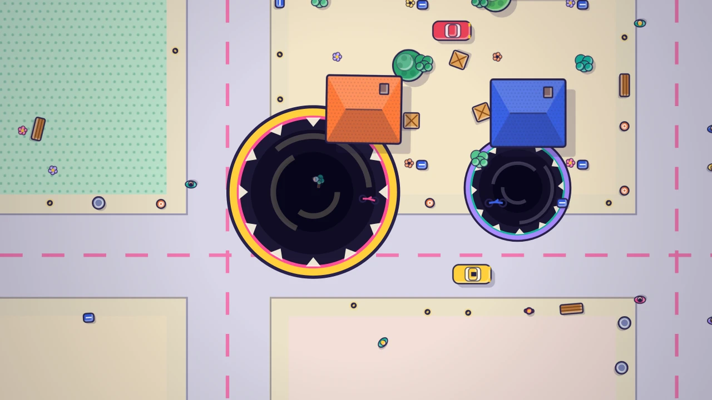

Hexan.js — FPS No downloads or plugins. Direct browser execution.Gulpopolis
Steer a hungry hole through a pop-up city map, swallow everything smaller than you, grow to gulp the stadium and out-eat five rivals in two minutes.
Gulpopolis is a two-minute race to become the biggest hole in town. You are a little round hole with a hungry rim, and the whole city is on the menu. Drag anywhere to steer (or just move the mouse) and glide over anything smaller than you: cones, hydrants, people on the sidewalk, ducks in the park pond, benches and bikes. Every bite makes you wider, and every new size opens a new tier of food. Soon you are slurping parasols and trees, then cars and taxis, buses and trucks, then whole houses, cafés and shops, office blocks, the downtown towers and, if you are quick, the Spire and the Stadium itself.
You are not alone. Five rival holes with names like Munchkin, Big Burp and Chompette are racing you for the same city. Bump into a smaller hole and you gulp it whole; meet a much bigger one and run. A live mini board shows who is ahead, arrows at the edge of the screen point to nearby rivals, pink for danger and teal for prey, and the last thirty seconds turn the music up for a frantic finish.
Every round has three clear stars: finish on the podium, reach Size 8, and chain a 60-gulp combo. Swallows that follow each other quickly build a combo that multiplies your points, with a pop, a wobble and a rising gulp for every bite. After the round you see the final standings, how close you came, the stars you earned and missed, and where your score would rank. Coins from each round buy upgrades (a bigger start, more speed, stronger suction) and new rim skins.
There is a Daily City that is the same for every player, with a streak to keep, and a share card with a beat-me link that drops your friend into your exact city with your score to beat. Until online leaderboards launch, global ranks are an offline preview against a generated field of sample players, and the game always says so.
Progress saves automatically on your device. Gulpopolis plays in portrait or landscape on phones, tablets and desktop, with touch, mouse or keyboard, and a restart takes under a second.